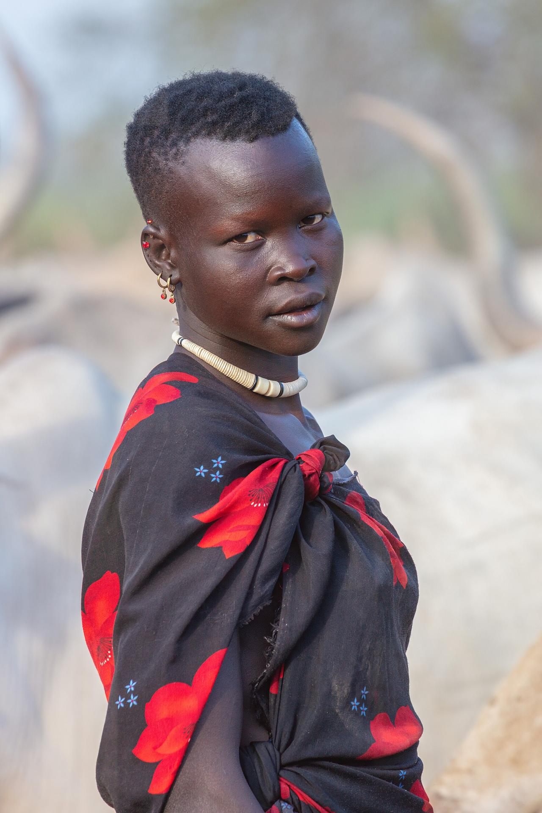

Openness at all levels of our work
Creative expertise and strong commitment
Within our organization and with the people we support
Within our organization and in society
Acting according to the values we promote
A willingness to change and learn
We use indigenous knowledge, aim for the highest quality standards, promote innovation and creativity, meet deadlines, strengthen networking and coordination, and face challenges head on.

We work with government agencies, NGOs, and donor organizations that share our commitment to community development. If you want to partner, volunteer, or support our work, get in touch.